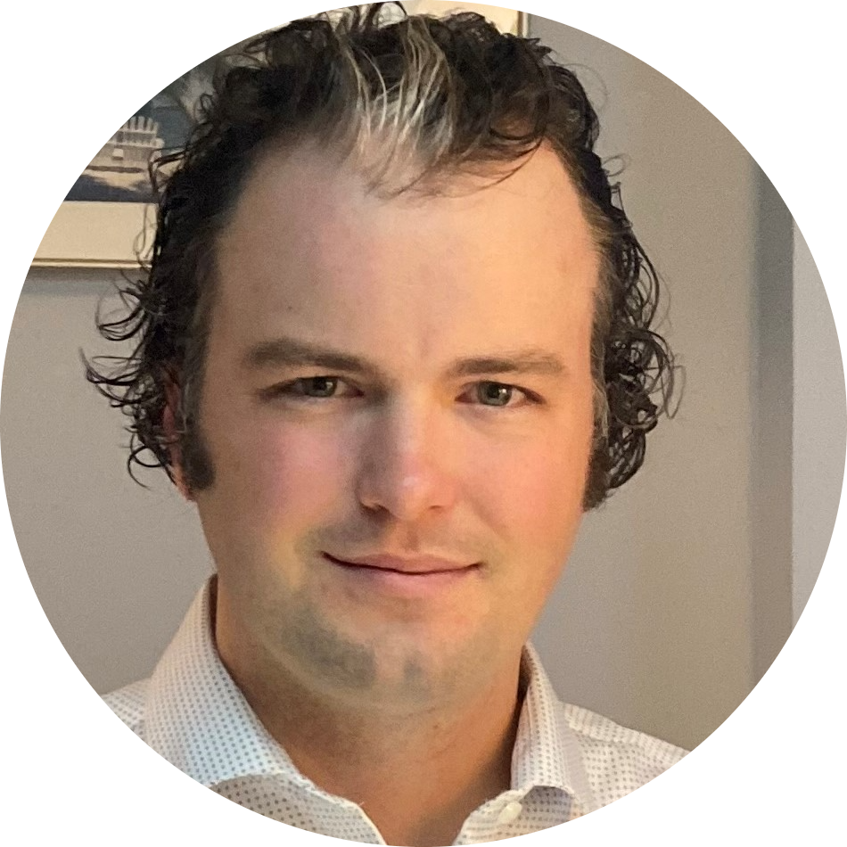

|  |
Stephen Knight Langford
2218 Goodwood Blvd SE, Smyrna, GA 30080
770-402-0461 • slangford1050@gmail.com • LinkedIn
|
PROFESSIONAL SUMMARY
Computer science student seeking an entry level Software Engineering position. Offering hands-on experience in coding in Java and Python in a Windows or Linux environment. I am learning Git, HTML, CSS, JavaScript, React, and Kubernetes with
continuing education in Java and Python. I am eager to learn other tools needed to perform job duties efficiently and effectively. Calm under pressure and ability to multi-task to achieve goals with great communication skills; a team player, with
the drive to succeed.
WORK EXPERIENCE
SOC ANALYST INTERNSHIP - VERINT SYSTEMS; ATLANTA, GA
MAY 2022 - OCTOBER 2022
- Investigated security alerts with a global team using various tools such as Cisco Umbrella, Cisco AMP, Microsoft Endpoints, ServiceNow, and Splunk.
- Identified a key issue with a security policy deleting developer’s code and wrote knowledge articles on how to respond to specific threats and alerts.
- Spearheaded a group of six interns from different departments to develop and present a proposal for a new statistical metric that would improve customer experience by increasing utilization across all Verint software by analyzing navigation
actions taken by the users.
- Selected as the best proposal out of four groups of interns after presenting to over fifty people including the Chief Technology Officer and various department heads. Went on to present the proposal to the Chief Executive Officer and the
President of Verint.
- Accepted an offer to stay on for an additional two months after the original three month paid internship ended.
- Completed the TIA Network+ and TIA Security+ courses and attended Splunk, Cisco Umbrella, and Cisco AMP workshops.
Skills
| Language |
Proficiency |
| Java |
⭐⭐⭐⭐⭐ |
| Python |
⭐ |
| HTML & CSS |
⭐⭐ |
| JavaScript - React |
⭐ |
| Git |
⭐ |
| UNIX/Linux |
⭐⭐⭐⭐ |
EDUCATION
B.S. IN COMPUTER SCIENCE, MINOR IN MATHEMATICS, & CHEMISTRY – GEORGIA STATE UNIVERSITY; ATLANTA, GA
EXPECTED MAY 2023 GRADUATION
- Current GPA: 3.5
- Relevant Coursework: Data Structures, Algorithms & Design, Operating Systems, Computer Networks, Computer Organization, System Levels, Web Programming.
- Technical Proficiency: Java, Linux
EDUCATION ACTIVITIES AND LEADERSHIP
GEORGIA STATE UNIVERSITY; ATLANTA, GA
MAY 2021 - PRESENT
- Founded Cybersecurity Club as President with three teams of seven students competing in the National Cyber League competition; constructed constitution outlining club operations and continuation framework for future members.
- As a Supplemental instruction Leader, formulated lesson plans to supplement lecture materials; implemented leadership techniques enabling students to achieve success in their coursework.
- Worked closely with Computer Engineers from Google to develop personal study skills and coding techniques; solved challenging ‘Problems of the Week’ designed by Google engineers.
- Built an infix calculator that converts data from infix to prefix; handles doubles, negatives, parenthesis, and standard calculator functions; includes a complete user interface (UI) and was designed in Java.
PERSONAL PROJECT
CHEMISTRY EDUCATION PLATFORM
CURRENT
- Developing a platform to disrupt the way that students and teachers approach learning chemistry by providing an easy to use, visual based learning platform to assist with smooth transition from learning the fundamentals and progressing to the advanced concepts of chemistry through visuals and clear objectives.
- Working with a close friend and mentor that has been a fullstack developer for over six years
- Learning HTML, CSS, JavaScript, Kubernetes and React with the advice and guidance of my mentor
- Planning to develop using Kubernetes containers